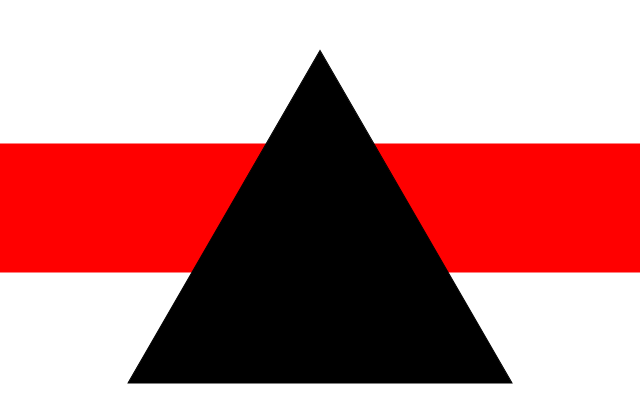
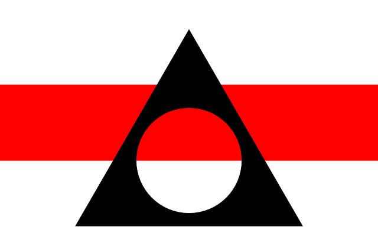

Cango2D User Guide
Cango2D
Cango2D is a graphics library for the HTML5 canvas element. Cango2D's command set is quite small, relying on the SVG 'Path' syntax to define paths and shapes to be drawn on the canvas. User defined world coordinates, animation and drag-n-drop are integral features.
The current version of Cango2D is 7v01, and the source code is available at Cango2D-7v01.js. Version 7 makes some changes to the API so it is not source compatible with earlier versions.
New in Cango2D Version 7
-
Version 7 makes major changes to the animation API, adopting the Timeline model. The Cango2D.animate method now takes as parameters; the object or group to be animated, an initialization function, a path function to be called prior to drawing every frame and an options object to hold parameters to be passed to these functions. Since the path function can apply movement transforms or change property values Cango2D can now achieve a wider range of animation effects.
The basis of animation in earlier Cango2D versions was the Tweener interpolation object. This has been generalized to support an array of key times to match its key frame values. The Tweener getVal method is now available for use in animation path functions.
In version 7v00 the keyTimes were expressed as a fraction of the Tweener timeline duration. Version 7v01 expects the key time values to be expressed as a percentage of the duration interval. Hence they should now be a monotonically increasing array of values in the range 0 to 100.
The Cango.playAnimation method now takes start and stop times, allowing arbitrary segments of a long timeline to be played.
All Obj2D and Group2D soft transforms are now automatically reset after the object or group is rendered. This forces all transforms to be reapplied at each frame of an animation or drag event making the code far easier to debug.
-
Version 7 changes the way a clipping path is defined and reset. An Obj2D may now be of type "CLIP" which can have the full set of matrix transforms applied and it can also inherit transforms applied to its parent group like any other Obj2D. The structure allows a clip path to be included in a Group2D to be animated and the clip region will track the movements of the group.
The clip path is reset to the full canvas after every animation frame so that the excluded areas of the canvas don't aggregate.
-
Version 7 provides support for adding a Zoom-and-Pan capability to a Cango2D canvas stack. The zoom and pan controls are set up by calling the global function initZoomPan.
-
Version 7 adds the Obj2D property lineWidthWC which sets the line width and border widths in world coordinate units. In earlier Cango2D versions line width could only be set in pixel units using the Obj2D.lineWidth property, this is still supported. The two methods of setting the line width are provided to clarify the behaviour of path line width and object border width when the Obj2D is scaled.
There are three methods of scaling the size of any Obj2D: 1. The Obj2D.scale method, which actually changes the coordinates values used to drawn the object. 2. The Obj2D.transform.scale method, which will scale the object as it is drawn. This dynamic re-size will not change the object definition, and can be cleared by the Obj2D.transform.reset method. 3. The Zoom-and-Pan utility can change the size of every Obj2D drawn on a canvas by changing the world coordinates of the Cango2D instance and then re-drawing all the objects.
If an Obj2D's line width is assigned to the lineWidthWC property, the line width or border width will scale just like any other dimension of the object with all three scaling methods. If the lineWidthWC property is null or undefined and a line width value in pixels units has been assigned to the lineWidth property then the path outline or object border will have a fixed pixel width regardless of any type of scaling applied to the path or object.
If both properties have been assigned a value then the lineWidthWC takes precedence. If neither has been specified, then the current default value of the Cango2DlineWidth (pixel value) belonging to the Cango2D context used to render the object, is used. This default value may be changed with the Cango2D.setPropertyDefault method.
Cango2D Architecture
Cango2D coordinate system
Cango2D coordinate system is Right Handed Cartesian with X value increasing to the right and Y values increasing up the canvas. Angles increase anti-clockwise. Both axes have the same scale factor. This restriction to isotropic 2D space allows the efficiency of matrix transforms to be exploited, considerably enhancing animation performance.
NOTE: This site also provides the Cango graphics library which has many of the same features as Cango2D, but Cango allows independent X and Y scaling, ideal for plotting graphs of data which invariably require different dimensions along X and Y axes.
Canvas Layers
Support for multiple canvas layers is provided by the Cango2D methods cgo.createLayer and cgo.deleteLayer. Only Cango2D contexts that are created on the original background canvas can create layers. Once a new canvas layer is created a new Cango2D context should be made to draw on that canvas. Layers can be drawn upon and cleared independent of the background canvas or other layers, so animations can run on a layer while drawing on other layers is unaffected. Drag and drop is not affected by which layer an object is drawn on. Drag and drop mouse event are applied as if they penetrate all layers.
Obj2D and Group2D objects
Everything drawn on the canvas by Cango2D is an Obj2D. An Obj2D can package drawing instructions for PATH, SHAPE, TEXT, IMG or CLIP type objects. Obj2Ds have properties and methods to define their appearance when rendered onto the canvas. Multiple objects can be grouped as the children of a Group2D object so that they can be handled as a single entity. A Group2D can have more Group2Ds as children as well as Obj2D, so objects within a Group2D form a tree structure of arbitrary depth.
Obj2D drawing origin
When an Obj2D is drawn onto the canvas at coordinates (x,y), the actual point within the Obj2D that is positioned at x,y is termed the object's drawing origin. A PATH or SHAPE type Obj2D's outline data is stored as canvas draw commands all referenced to the world coordinate origin (0,0). So if no 'translate' methods have been applied the Obj2D is drawn with its drawing origin at 0,0. Similarly, TEXT and IMG objects also have a drawing origin that would land at world origin (0,0) if no translate method has been applied. This drawing origin for IMAGE and TEXT Obj2D is set by the object's lorg (locate origin) property. The lorg property takes values 1 to 9 where 1 represents left-top, 2 center-top and so on to 9 which represents right-bottom.
Hard Transform Methods
The Obj2D object has 'hard' transform methods to modify the definition of the object. These are obj.translate, obj.scale and obj.rotate methods which move the object outline relative to its drawing origin. So the object is repositioned on the canvas but its drawing origin remains in the same spot, effectively moving the drawing origin to another point on the shape or image etc. These hard transforms are permanent, so all subsequent rendering of the object will have this rotation, translation or scaling.
The Group2D object has the same hard rotate, scale and translate methods which just recursively call the corresponding method of its Obj2D descendants.
Soft Transform Methods
Both Obj2D and Group2D have a transform property which itself is an object with methods for applying various movements and distortions to the object. They are:
obj.transform.translate,
obj.transform.rotate,
obj.transform.revolve,
obj.transform.scale,
obj.transform.skew
obj.transform.bend.
When applied to a Group2D they will be inherited by all the Group2D's children. Child Obj2D or Group2D may have transform methods applied to them directly, these are combined with the inherited transforms and the resulting net transform propagated to the children. The transform.reset method resets the offset transforms of the object or group on which it is called, it is not recursive. A Group2D's children retain their own transforms when the parent group transforms are cleared.
Note that transform.rotate, transform.skew, transform.scale and transform.bend operations are always referenced to the object's drawing origin regardless of any operations which may have moved the drawing origin with respect to the world coordinate origin. The transform.translate and transform.revolve are always referenced to the world coordinate drawing origin.
Creating Obj2D and Group2D
Obj2D are JavaScript objects created by calling the constructor as follows:
obj = new Obj2D(data, type, options);
An Obj2D returned from its constructor can be rendered to the canvas or grouped with other objects and groups and manipulated prior to rendering.
An Obj2D can also be created by duplicating an existing Obj2D with the sourceObj2D.dup() method. This returns a new Obj2D whose properties are copied by value from the 'sourceObj2D' object, they do not reference the original.
There are also four shortcut methods drawPath, drawShape, drawText and drawImg which construct a temporary Obj2D and render it onto the canvas in a single call. The object can be positioned anywhere in the world coordinate system when rendered.
Group2D are also created by calling their constructor, all the initial members of the Group may be passed as parameters to the constructor as shown in the following code snippet which creates a SHAPE type Obj2D and a PATH type Obj2D and then forms a Group2D with the two objects as children.
var o1, o2, grp;
o1 = new Obj2D(pathData1, "SHAPE");
o2 = new Obj2D(pathData2, "PATH", {strokeColor:'blue'});
grp = new Group2D(o1, o2);
Further Obj2D may be added to an existing Group2D using the Group2D.addObj method or deleted using the Group2D.deleteObj method.
Cgo2D path definition syntax
The outlines for PATH and SHAPE objects are defined in Cgo2D format which comprises single letter draw commands and their associated coordinates. The syntax is borrowed from the SVG path drawing command set. Commands are single letter strings such as 'M' for move, 'L' for a line segment, 'C' for a cubic Bézier curve, etc and 'Z' for a close path instruction. Uppercase commands have absolute coordinates relative to the world coordinate origin (0,0). Lowercase command coordinates are relative to the current pen position (end point of previous command). The first command must always be a move command ('M' or 'm') followed by the x, y values of the starting point of the path in world coordinates. This is followed by an arbitrarily long set of commands and their associated parameters and coordinates.
As an example, here is the array of commands to draw a unit square with the drawing origin (0,0) at its center.
var square = ['M', 0.5,-0.5, 'l',0,1, -1,0, 0,-1, 'z'];
To simplify defining the most common shapes Cango2D provides the shapeDefs utility. The shapeDefs object has methods to create the Cgo2D data arrays representing the outline path of many commonly used shapes. The methods take dimension parameters such as the width and height of the rectangle or the diameter of the circle.
SVG path data may also be imported as a string copied from an SVG editor. SVG path data have their Y coordinate values increase DOWN the screen and the "A" segment arcs sweep clockwise. The svgToCgo2D utility to provided to convert the SVG coordinates to the Cango2D world coordinates by flipping the sign of all Y coordinates and flipping and arc x-axis-rotation angle and sweep direction. SVG editors usually have the drawing origin for PATH data at the top left of the screen which introduces a large offset in all coordinates. The parameters xOfs, yOfs are added to the SVG coordinates to correct this, moving the path's drawing origin to a more useful position. The xOfs and yOfs are added prior to flipping the Y coordinate values.
var pathdata = svgToCgo2D(svgPathStr, xOfs, yOfs);
Setting Obj2D properties
Obj2D properties are typically set at construction by passing all the property key-value pairs to the 'options' parameter of the Obj2D constructor. Changing the property values of existing Obj2D is done using the Obj2D.setProperty method which takes as parameters the name of the property and its new value.
Clipping path
Cango2D supports clipping paths by using the Obj2D type "CLIP". The clipping path is defined just like any PATH or SHAPE outline with Cgo2D data array or copying an SVG path string and converting with the svgToCgo2D utility. The path data is then used as the definition of a new Obj2D of type"CLIP" this object has all the methods of any Obj2D it can be transformed with hard and soft transforms. Attempts to set properties like fillColor or border etc are all ignored, just the outline path is significant.
To apply a clipping path the CLIP type object must be a child of a Group2D, any other children of the Group2D that are drawn after the CLIP Obj2D is rendered will be clipped, only those parts of the object lying within the clipping path will be drawn. The clipping path is reset by the render method after all members of the Group2D are drawn. The order of adding objects to a Group2D determines which child Obj2D (or Group2D) will be clipped. Objects in the array of children of a Group2D before the CLIP object are not clipped, all those drawn after are clipped.
Figure 1 shows an example of using a CLIP type Obj2D. A Group2D is created comprising a red square SHAPE, a circular CLIP object and a blue triangle. The square is rendered first and is not clipped, the clipping circle is then rendered which sets up the clipping path and then the triangle is rendered. Only the part of the triangle within the clipping path is drawn. The clipping path will be reset to the full canvas (ie. no clipping) after the last member of the Group2D is rendered.
Figure 1. A demonstration of a clipping path.
function testClip(cvsID)
{
var g,
clipper = new Obj2D(shapeDefs.circle(50), "CLIP"),
sqr = new Obj2D(shapeDefs.square(70), "SHAPE", {
fillColor: "red"}),
tri = new Obj2D(shapeDefs.triangle(70), "SHAPE", {
fillColor:"royalblue"}),
grp;
g = new Cango2D(cvsID);
g.setWorldCoords(-60, -60, 120);
grp = new g.createGroup2D(sqr, clipper, tri);
g.render(grp);
}
Rendering
Cango2D has only one methods to actually draw Obj2D onto the canvas: cgo.render.
render takes a Group2D or Obj2D as a parameter a single Obj2D or Group2D to be rendered to the canvas. In the case of Group2D, the entire family of terminal Obj2D descendants is rendered. All transforms that have been accumulated by any of the Group2D or Obj2D in the family tree are applied. The Group2D transforms are propagated down the family tree structure to determine the final positions of the Obj2D which are then rendered to the canvas. render takes a second optional 'clear' parameter which, if it evaluates to true will cause the canvas to be cleared of all previous drawing prior to rendering the new scene.
After the Obj2D or Group2D is rendered all 'soft' transforms applied to the object are reset. In the case of Group2D the transforms for the whole family tree are reset recursively. This requires all animation path functions to re-apply all transforms prior to each frame.
Drag-and-Drop
Drag-and-Drop capability can be enabled and disabled on any Obj2D or Group2D by obj.enableDrag and obj.disableDrag methods. The 'enableDrag' method takes three user defined callback functions as parameters that run when mousedown, mousemove and mouseup events occur on the Obj2D. The 'enableDrag' method creates a JavaScript Object type Drag2D which is assigned to the Obj2D.dragNdrop property. Drag2D objects encapsulate the event handlers that do the event housekeeping and then call the user defined callbacks, passing them the current cursor coordinates. The callbacks are executed in the scope of the Drag2D object which has various properties such as dwgOrg, grpDwgOrg, grabOfs and so on, to assist in coding of callback handlers. Enabling drag-n-drop on a Group2D recursively enables the drag-n-drop on all the group's children.
Animation
Any Obj2D or Group2D can be animated by calling the Cango2D animate method.
cgo.animate(obj, initFn, pathFn, options);
The parameter 'obj' is the Obj2D or Group2D to be animated, 'initFn', is an optional user defined function that can apply transforms to the object prior to the animation commencing, the object is rendered in this initial state. The 'pathFn' is a user defined function called for every frame to calculate the object's position, rotation etc. and apply the transforms to the object. The 'options' parameter is an optional object which can hold any user defined properties that may be required by the initFn and the pathFn.
Each pathFn has independent control of its object's frame to frame behaviour, so objects may have independent delay and looping.
All animations on a canvas are controlled by a master timeline with all animated objects transformed and rendered at each frame even if they are drawn on different layers. All path functions of all animated objects are passed the same frame time value ensuring the motion of different objects are synchronized. The animation control methods are:
cgo.playAnimation,
cgo.pauseAnimation,
cgo.stepAnimation,
cgo.stopAnimation.
These methods may be called on any Cango2D context from the background canvas or any layer, they all refer to the same methods. The 'playAnimation' and 'stepAnimation' methods follow the same sequence for each frame for each animated object on all layers:
- Clear the object's canvas
- Call the animation's pathFn, passing the elapsed time along the timeline for this frame and the options object.
- Render the object or group onto the canvas, which also resets all the object's soft transforms.
- Swap the animation's nextState and currState objects and reset any clipping path.
To remove the object and its animation specification use deleteAnimation or deleteAllAnimations methods.
The animation frame rate is set by the 'requestAnimationFrame' utility, the time between frames will not be constant but will generally be around 17 msec (~60 frames/second).
The Animation object
To implement this animation model, the Cango animate method creates a JavaScript object of type Animation which encapsulates references to the object to be animated, the Cango context to render the object and state properties and so on. The initFn and the pathFn are called in the scope of the Animation object ie. within these functions 'this' will refer to the Animation object so all its properties are readily available.
The pathFn may be of a type that needs to refer to the values used to drawn the frame currently on the screen and the time it was drawn, to calculate values for the next frame. To assist in such situations, Cango2D animation provides the currState and nextState objects. All the newly calculated values that the pathFn will need next frame should be stored in the object this.nextState. After playAnimation or stepAnimation renders the object to the canvas it swaps this.currState and this.nextState objects so that the 'as rendered' properties are always available in this.currState. As a rule always read from currState, make calculations and write to nextState then apply the transforms to the object or group.
Properties:
gc: Cango graphics context - the graphics context that will render the object onto the canvas at each frame along the timeline. The pathFn can make use of this graphics context to call Cango methods such as clipPath or setDefaultProperty etc.
obj: Cobj or array of Cobj - the Cobj object (or array of Cobj) to be animated. Having access to the object to be rendered gives complete control to the initFn and the pathFn. For example the pathFn may create a new Cobj for each frame and have the new object drawn by simply assigning this.obj to a new Cobj (or array of Cobj).
nextState: Object - An object is created with the basic properties x, y, scl, and rot, with default values 0,0,1,0 respectively. These basic property values may be updated by the pathFn prior to drawing each frame of the animation the values are then passed to the render function as arguments. The initFn code may add any properties that may be useful to save the state of the animation between frames. Once the render function has been called the nextState is swapped with the currState object so the 'as rendered' values of the properties are available to the pathFn as a reference for the next time it is called when it will overwrite the nextState values with new values for the next frame and so on.
currState: Object - An object created as a copy of the nextState object after initFn is called. This object should be considered read-only as it will be swapped with the nextFrame object after each frame is rendered. This will free all the nextState properties to be over-written but preserves their values which were used to draw the frame currently on screen. The currState object will always have the property 'time' which hold the time (in milliseconds) at which the current frame was rendered. The this.currState.time is obtained from the JavaScript Date.now method. All other properties will be user defined 'nextState' properties.
options: Object - An object that is available the initFn and pathFn to hold values useful in generating the nextState typically used to store constants and parameters for pathFns. The Tweener.getValue method often uses the 'this.options' object to specify the array of keyframe values to be interpolated.
Simple animated transform example
Here is the source code for an animation which rotates a TEXT Obj2D through 360 degrees then back again at the same time scaling the object to twice its size and back again. The animation starts after a 1 sec delay then repeats the movement and the delay period indefinitely.
Figure 2. "TEXT" Obj2D with animated transform.rotate and transform.scale.
function sayHullo(cvsID)
{
var g,
hullo = new Obj2D("Hullo World", "TEXT", {
fillColor:"blue",
fontSize:16,
lorg:5}),
hulloData = {scl:[1, 2, 1],
rot:[0, 360, 0]},
twnr = new Tweener(1000, 5000, 'loopAll');
function hulloPath(time, opts)
{
var sclVal = twnr.getVal(time, opts.scl),
rotVal = twnr.getVal(time, opts.rot);
this.obj.transform.scale(sclVal);
this.obj.transform.rotate(rotVal);
}
g = new Cango2D(cvsID);
g.setWorldCoords(-12, -12, 24);
g.animate(hullo, null, hulloPath, hulloData);
g.playAnimation();
}
Simple animated property example
Here is the source code for an animation which changes the fillColor a circle from red to green then blue then back to red. The animation lasts 3 seconds and repeats the cycle indefinitely.
Figure 3. "SHAPE" Obj2D with animated "fillColor" property.
function animColor(cvsID)
{
var g,
ball = new Obj2D(shapeDefs.circle(50), "SHAPE", {
fillColor:'rgb(255,0,0'}),
colData = { r:[255, 0, 0, 255],
g:[0, 200, 0, 0],
b:[0, 0, 255, 0] },
colTwnr = new Tweener(0, 3000, "loop");
function pathBall(time, opts)
{
var red = Math.round(colTwnr.getVal(time, opts.r)),
grn = Math.round(colTwnr.getVal(time, opts.g)),
blu = Math.round(colTwnr.getVal(time, opts.b));
ball.setProperty("fillColor", "rgb("+red+","+grn+","+blu+")");
}
g = new Cango2D(cvsID);
g.setWorldCoords(-50, -50, 100);
g.animate(ball, null, pathBall, colData);
g.playAnimation();
}
Getting Started
Cango2D requires the browser to support the HTML5 canvas element. To use the Cango2D, download the JavaScript file: Cango2D-7v01-min.js. Store the file in a directory accessible to JavaScript code running in the web page, note the directory path, then add the following line to the web page header:
<script type="text/javascript" src="[directory path]/Cango2D-7v01-min.js"></script>
Within the body of the web page insert a canvas element. The only attribute required by Cango2D is a unique id.
<canvas id="canvasID" width="500" height="300"></canvas>
Canvas pixel dimensions should be specified by the 'width' and 'height' attributes, as shown above. Specifying the canvas dimensions by CSS 'width' and 'height' style values is not the same in older browsers, these only set the size of the canvas box dimensions on the HTML page. If the dimensions are not identical, the browser will stretch the pixel size and shape to make the canvas pixels fill the HTML box size. Cango2D avoids this possibility by resetting the pixel dimensions to match the HTML canvas box dimensions, forcing a 1:1 mapping of canvas pixels to screen pixels.
Cango2D Application Programming Interface
Cango2D constructor
Syntax:
var cgo = new Cango2D(canvasID);
Description:
To start drawing an instance of the Cango2D graphics object must be created. This requires a canvas element to exist in the web page and for it to have a unique ID. Pass the canvas ID to the Cango2D constructor and the Cango2D graphics object is returned.
Parameters:
canvasID:String - The 'id' property of the canvas object on which the Cango2D library will draw.
Returns:
Cango2D object - An instance of the Cango2D graphics library which has all the following properties and methods.
Cango2D properties
Syntax:
var prop = cgo.property;
Properties:
ctx: CanvasRenderingContext2D - the raw canvas drawing context. This is available to access the more esoteric canvas capabilities such as cgo.ctx.globalCompositeOperation etc.
aRatio: Number - Aspect ratio of the canvas element, the canvas width divided by canvas height. If the canvas is square, cgo.aRatio == 1, if the canvas is 300px wide and 200px high, cgo.aRatio == 1.5.
xscl:Number - the X axis scaling factor. Multiplying by cgo.xscl will convert world coordinate values to canvas pixel values. All Obj2D dimensions are scaled by cgo.xscl in the render method immediately prior to drawing on the canvas. If an application requires a dimension to be set in pixels, then dividing the desired pixel value by this.xscl will result in the equivalent pixel dimension being preserved when the object is rendered.
Cango2D methods
Syntax:
animId = cgo.animate(obj, initFn, pathFn, options);
Description:
The animate method creates an Animation object with properties that make everything required to control the animation available to the initFn and pathFn. Both these functions are called in the scope of this Animation object.
The initFn is called immediately, it is designed to apply transforms to the object or group set place it in its initial position (prior to the animation starting). The pathFn is called for every frame of the animation. At each frame along the timeline the cgo context canvas is cleared and then the pathFn of all animated objects is called. The pathFn can then calculate the new movement transforms and apply them to 'obj'. If the previous values of these properties are required to make the next frame calculations the this.currState and this.nextState objects are provided. The calculated values of any properties that are required across frames should be saved in this.nextState, after rendering, this.nextState and this.currState are swapped so the 'as rendered' properties will be available when 'pathFn' is called for the next frame. If the time along the timeline is required for calculating the next frame properties currState.time property is provided. It always holds the time when the frame currently on screen was drawn. After pathFn returns all animated objects are then rendered. After rendering the currState and nextState objects are swapped, the currState.time property is updated and the cgo.resetClip is called.
Parameters:
obj: Obj2D or Group2D - the Obj2D object (or Group2D) to be animated.
initFn: Function - A function to be called to initialize or create additional properties of nextState (if required).
pathFn: Function - A function to be called to update the object properties to the values to be used when drawing the next frame. When called pathFn is passed two parameters 'time' and the 'options' object. The time will be in the same format as 'this.currState.time so that the elapsed time since the last frame was drawn will be:
var dt = time - this.currState.time; // in miliseconds
options: Object - An object storing any variables or constants that may be required by the initFn, or pathFn. The options object is passed as an argument to these functions.
Syntax:
cgo.clearCanvas(fillColor);
Description:
Clears the canvas, deleting all drawing, images and text. The canvas may be optionally filled with the color fillColor. If 'clearCanvas' is called with no 'fillColor' parameter, or 'fillColor' is null, then the canvas is cleared back to its default color which is inherited from the canvas element style. All graphics drawing contexts are left intact. Listening for mousedown events on any draggable objects is canceled.
Parameters:
fillColor:String or canvasGradient- The fill color may be specified in any of the CSS color formats or if a gradient color is to be used a LinearGradient or RadialGradient object should be passed, see colors section for detailed syntax.
Syntax:
var obj = cgo.createGroup2D(...);
Description:
Creates a Group2D object with a 'children' array property, designed to hold Obj2D and other Group2D objects. The Group2D object has transform matrix properties and methods to apply transforms to the coordinates of the Obj2D in the 'children' array, and recursively apply them to the children of Group2D objects in the 'children' array. The objects forming the group are passed as parameters, they may be Obj2D, Group2D or arrays of either. Elements of Arrays of objects are added individually to the 'children' array. More objects can be added to the group after creation, by using the Group2D addObj method.
Parameters:
. . . :Obj2D, Group2D or arrays or either - The 'arguments' property is parsed to extract all Obj2D and Group2Ds and they are added to returned Group2D.children array.
Returns:
Group2D object - an object holding references to Obj2Ds and/or Group2Ds to be manipulated as a single unit.
Syntax:
var ovlID = cgo.createLayer();
Description:
Creates a transparent canvas overlay above the background canvas. The overlay will be the same size as the Cango2D canvas and will be transparent. A new instance of Cango2D should be created to draw in the overlay. The properties of the background canvas can be readily copied to the new Cango2D context using the 'dupCtx' method.
Note 1: Obj2D on any layer will respond to Drag and Drop events.
Note 2: Only background canvases can create overlay canvases, 'createLayer' called by a Cango2D context attached to overlay canvas will not create a new canvas and return an empty string in place of an ID.
Parameters:
none
Returns:
String - The unique ID string of the newly created canvas element. This string allows reference to the canvas overlay element by using document.getElementById. The ID string is also required by the Cango2D 'deleteLayer' method.
Syntax:
cgo.deleteAnimation(animId);
Description:
All animations are paused and the animation whose ID is 'animId' is deleted. This ID value was returned when the animation was created by a call to 'animate' method. The animation definition is removed from the current array of animations. The animated object will remain frozen in the state drawn in the last frame. This method may be called on any Cango context on any layer in the stack and will still delete the nominated animation.
Parameters:
animId: String - An ID string returned when the animation was created.
Syntax:
cgo.deleteAllAnimations();
Description:
Deletes all the animations from the background layer and from any and all canvas layers. All the animations are stopped and animation definitions removed from the current array of animations, all the animated objects will remain frozen where they were last drawn. This method may be called on any Cango context on any layer and will still clear all animations on all layers.
Parameters:
none.
Syntax:
cgo.deleteLayer(ovlID);
Description:
Deletes an existing canvas overlay. The ID string of each canvas layer is returned from the 'createLayer' method. Passing this string to 'deleteLayer' will remove the canvas from the DOM. The canvas can be anywhere within the stack of canvases created but the background canvas can not be deleted with this method.
Parameters:
ovlID:String - The ID attribute of the canvas element to be deleted. This is the same string that is returned when the layer was created with the 'createLayer' method.
Syntax:
cgo.drawImg(imgSpec[, x, y [, options]]);
Description:
A wrapper function which calls the Obj2D constructor passing the 'imgSpec' as the data and "IMG" as the type. The imgSpec can be a URL string or a pre-loaded Image object. The 'options' object is also passed to the constructor's 'options' parameter. If x,y coordinates are supplied a soft translation transform, Obj2D.transform.translate(x, y) is then applied and cgo.render is then called, this will move the shape drawing origin to x,y in world coordinates as it is rendered.
Parameters:
imgSpec:Image or String - The pre-loaded Image object or the URL of the image to load.
x, y:Numbers - X and Y coordinates of the point at which the drawing origin of the image is to be rendered.
options:Object - The values for the various Obj2D properties should be passed as key-value pairs in this object (see Obj2D.setProperty method for the list of properties).
Syntax:
cgo.drawPath(pathData[, x, y [, options]]);
Description:
A wrapper function which calls the Obj2D constructor passing the 'pathData' string as the data, the string "PATH" as the type, and passing the 'options' object as the 'options' parameter. This will covert the pathData to an array of 'DrawCmd' objects suitable for subsequent rendering as an outline path onto the canvas and set all the optional parameters as specified by the 'options' object. A soft translation, Obj2D.transform.translate(x, y), is then applied and cgo.render is then called, this will move the path drawing origin to x,y in world coordinates as it is rendered.
Parameters:
pathData:Array - An array of Cgo2D drawing commands and coordinates, (see Cgo2D syntax for the command descriptions).
x,y:Numbers - X and Y world coordinates of the position at which the drawing origin of the path will be located.
options:Object - The values for the various Obj2D properties should be passed as key-value pairs in this object (see Obj2D.setProperty method for the list of properties).
Syntax:
cgo.drawShape(pathData[, x, y [, options]]);
Description:
A wrapper function which calls the Obj2D constructor passing the 'pathData' string as the data, the string "SHAPE" as the type, and passing the 'options' object reference unchanged constructor's 'options' parameter. This will covert the pathData to an array of 'DrawCmd' objects suitable for subsequent rendering as a color filled shape onto the canvas and set all the optional parameters as specified by the 'options' object. A soft translation transform, obj.transform.translate(x, y) is then applied and cgo.render is then called, this will move the shape drawing origin to x,y in world coordinates as it is rendered.
Parameters:
pathData:Array - An array of Cgo2D drawing commands and coordinates, (see Cgo2D syntax for the command descriptions).
x, y:Numbers - X and Y coordinates of the position at which the drawing origin of the shape will be located, measured in world coordinates.
options:Object - The values for the various Obj2D properties should be passed as key-value pairs in this object (see Obj2D.setProperty method for the list of properties).
Syntax:
cgo.drawText(str[, x, y [, options]]);
Description:
A wrapper function which calls the Obj2D constructor passing the 'str' string as the data, the string "TEXT" as the type, and passing the 'options' object reference unchanged to the constructor's 'options' parameter. This will store the string 'str' for subsequent rendering onto the canvas and set all the optional parameters as specified by the 'options' object. A soft translation transform, obj.transform.translate(x, y) is then applied and cgo.render is then called, this will move the text drawing origin to x,y in world coordinates as it is rendered.
The obj.lorg property will determine which point within the text bounding box is designated as the object's drawing origin. The obj.fontWeight property will set the weight with which the text is rendered, the obj.fontFamily property will set the font to be used. If any of these properties is undefined then the current default values will be is used, see setPropertyDefault.
Parameters:
str:String - The text string to be written.
x y:Number - X and Y coordinates of the position at which the test drawing origin will be placed, measured in world coordinates.
options:Object - The values for the various Obj2D properties should be passed as key-value pairs in this object (see Obj2D.setProperty method for the list of properties).
Syntax:
cgo.dupCtx(sourceCtx);
Description:
Copy the graphics context properties from another Cango2D context into cgo. When drawing onto layers, this method provides a quick way to copy the graphics context properties for use on the new layer so that the drawing there will all be in the same world coordinates. cgo.dupCtx() copies the properties, scale factors and so on, from the graphics context sourceCtx. Properties copied exclude the 'cvs' and 'cId' as these will have been set when the Cango2D calling instance 'cgo' was created. Properties are copied by value so that after the call changing the source properties will have no effect on 'cgo' properties.
Parameters:
sourceCtx:Cango2D - The source Cango2D from which the cgo properties are copied.
Syntax:
cgo.playAnimation([startTime[, stopTime]]);
Description:
Starts all animations that have been defined for Cango2D contexts on this canvas or stack of canvases (if overlay canvases have been created). At each frame the elapsed time along the timeline is passed to the pathFn of all animated objects so they can apply the movement transforms. By default, the timeline is traversed from time 0, but if a 'startTime' is passed then this will be the time initially passed to the pathFn. The animation timeline is traversed by drawing a frame and then making a call to 'requestAnimationFrame' to draw the next and so on until the 'stopAnimation' method is called or, if a 'stopTime' was passed then the animation will stop as soon as the elapsed time since starting equals or exceeds this stopTime.
Parameters:
startTime: Number - Optional time in milliseconds along the timeline where the animation playing will commence.
stopTime: Number - Optional time in milliseconds along the timeline where the animation will cease and the mode will be set to 'stopped'.
Syntax:
cgo.pauseAnimation();
Description:
Stops any current animation and saves the elapsed time since the start of the animation. When 'playAnimation' or 'stepAnimation' are called the animation will resume from the current time offset from the start. This differs from the 'stopAnimation' call which forces the animation to return to the start when 'playAnimation' or 'stepAnimation' is called. The context 'cgo' may be attached to the background or any overlay canvas and will have the same effect.
Parameters:
none.
Syntax:
cgo.render(obj, clear);
Description:
Renders an Obj2D or Group2D (actually all the Obj2D descendants of the Group2D) onto the canvas. Each Object to be rendered has been previously been converted to native canvas instructions which are stored in the object properties. The render method applies all the accumulated 'soft' transforms to the object.
Parameters:
obj:Obj2D or Group2D - The object or group of objects to be rendered to the canvas.
clear:Boolean - If clear evaluates to 'true', the canvas is cleared before rendering the Group2D descendants (or single Obj2D), if it evaluates to 'false', or is omitted the canvas is not cleared.
Syntax:
cgo.resetClip();
Description:
Clears the current clip path by resetting it to the full canvas. The native drawing context is restored to the state when the resetClip was last called or if no resetClip call has been made it is restored to the state when the first call to 'clipPath' was made. If multiple calls to 'clipPath' are been made without a call to resetClip, then the clip area is the combination of all the clip paths.
Parameters:
none.
Syntax:
cgo.setPropertyDefault(propertyName, val);
Description:
Sets the default values for various system properties. The property whose default is to be set is specified by the string 'propertyName' this string is not case sensitive and may take the values set out in column 1 of the table below.
The new default value is passed as 'value'. The value is restricted to be within the range of values appropriate to the property. If the property is not one of the string values listed or the value is an incorrect type or outside the reasonable range of values then the call is ignored and the current default value remains unaltered.
If no call is made to 'setPropertyDefault' for a particular property, then the property value remains at its system default value listed in column 4.
| Name | Type | Range | Default |
|---|---|---|---|
| fillColor | CSS Color | - | 'rgba(0, 0, 0, 1.0)' |
| strokeColor | CSS Color | - | 'rgba(128, 128, 128, 1.0)' |
| lineWidth | Number (pixels) | - | 1 |
| lineCap | String | 'butt', 'round', 'square' | 'butt' |
| fontFamily | String | CSS font family definitions | "Consolas, Monaco, 'Andale Mono', monospace" |
| fontSize | Number (pixels) | >0 | 12 |
| fontWeight | Number | 100..900 | 400 |
| stepTime | Number (msec) | 16..500 | 50 |
NB: fontSize pixel value is converted to the equivalent world coordinate value at instantiation so that fontSize can be scaled with transform methods.
Parameters:
propertyName:String- The name of the property whose default value is to be set. It must be one of the strings listed in column 1 of the table above. The string value is not case sensitive.
value- The new default value for the property. Its type should match the type listed in column 2 of the table above and the range of values must fall within the range listed in column 3.
Syntax:
cgo.setWorldCoords(lowerleftX, lowerleftY, spanX);
Description:
Defines a world coordinate system for subsequent drawing operations with this graphics context. 'setWorldCoords' sets x and y offsets and scaling factors to map world coordinate values to canvas drawing pixel values. The world coordinate values of the lower left corner of the canvas and the width of the canvas in world coordinate units as passed as parameters.
Parameters:
lowerleftX:Number - World coordinate value of the left edge of the canvas.
lowerleftY:Number - World coordinate value of the bottom edge of the canvas.
spanX:Number - Width of the canvas in world coordinates.
Syntax:
cgo.stepAnimation();
Description:
If the animation is currently playing this call does nothing. If paused or stopped the animation will request a frame to be drawn on the background canvas and all overlay layers with the elapsed time of the animation advanced by the current value of 'stepTime'. One frame will be drawn and the animation put into the 'paused' state. The value of 'stepTime' may be set by setPropertyDefault, the default value is 50 msec. The context 'cgo' may be attached to the background or any overlay canvas and will have the same effect.
Parameters:
none.
Syntax:
cgo.stopAnimation();
Description:
Stops any current animation and reset the elapsed time into the animation back to 0. When 'playAnimation' or 'stepAnimation' is subsequently called the animation will resume from the beginning of the animation timeline. This differs from the 'pauseAnimation' call which restart the animation from the current elapsed time along the animation timeline. The context 'cgo' may be attached to the background or any overlay canvas and will have the same effect.
Parameters:
none.
Syntax:
var posObj = cgo.toPixelCoords(x, y);
Description:
This method converts the coordinates (x, y) of a point expressed in world coordinates to an object with x and y properties that hold the raw canvas pixel coordinates of the point. The canvas pixel coordinates are set to be equal to the screen pixels when the Cango2D graphics context is created. So toPixelCoords always returns the canvas pixel coordinates which map 1 to 1 with screen pixels.
Parameters:
x, y:Number - X and Y coordinates of a point measured in world coordinates.
Returns:
Object - An object with two properties:
x:Number - X coordinate of the point measured in canvas pixel coordinates, equal to screen pixels.
y:Number - Y coordinate of the point measured in canvas pixel coordinates, equal to screen pixels.
Syntax:
var posObj = cgo.toWorldCoords(x, y);
Description:
This method converts the coordinates (x, y) of a point expressed in canvas pixels coordinates to an object with x and y properties that hold the world coordinates of the point. There can be more than one Cango2D graphics context on a canvas, the world coordinates of the point in the calling graphics context are returned.
Parameters:
x, y:Number - X and Y coordinates of a point measured in world coordinates.
Returns:
Object - An object with two properties:
x:Number - X coordinate of the point measured in world coordinates
y:Number - Y coordinate of the point measured in world coordinates.
Obj2D
The Obj2D constructor allows Obj2D to be made independent of a specific instance of Cango2D graphics context.
Obj2D constructor
Syntax:
var obj = new Obj2D(data, type, options);
Description:
This function returns an Obj2D object suitable to be passed to the render method of a Cango2D instance.
Parameters:
data:various types - The 'type' parameter will determine how the 'data' parameter is interpreted it is expected to be an array of Cgo2D drawing commands for types 'PATH', 'CLIP' or 'SHAPE', the URL of an image or an Image object, for type 'IMG' or a String object for type 'TEXT'.
type:String - The only values recognized are 'PATH', 'SHAPE', 'IMG', 'TEXT' or 'CLIP'. If 'type' is undefined or any other value then 'PATH' type is assumed by default.
options:Object - This object may contain key-value pairs to pre-set the properties of the Obj2D returned. The keys and value restrictions are identical to those described in the setProperty method.
Example
The following two line code snippet will create a 'SHAPE' type Obj2D with outline path a square with width and height 4 units in the world coordinates of the Cango2D context used to render it. It will be filled with the color red.
var obj = new Obj2D(['M',2,-2,'l',0,4,-4,0,0,-4,'z'], 'SHAPE', {'fillColor':'red'});
Obj2D methods
Syntax:
obj1.appendPath(obj2, delMove);
Description:
appendPath extends the array of draw commands defining the outline of obj1 by appending the drawCmds of obj2. If the optional 'delMove' parameter is 'true', then the initial 'moveTo' command is deleted. This command applies only to SHAPE, PATH and CLIP type objects, for Obj2D types TEXT or IMG the command does nothing.
Parameters:
obj2:Obj2D - The object whose drawCmd array elements are to be appended to the drawCmd array of obj1. The obj2.drawCmds are cloned ie. new javascript objects are made that are copies of the originals not references to the originals.
delMove:Boolean - If 'true' the initial 'moveTo' command of obj2 is deleted. This results in the outline path of obj1 being join to the outline of obj2. If 'delMove' evaluates to false, then the 'moveTo' command and its coordinates just become the next command in the outline of obj1 which means there will be a break in the outline.
Syntax:
obj.disableDrag();
Description:
Sets the obj.dragNdrop property to 'null' and removes the reference to obj from the array of objects to be checked for a hit on mousedown events.
Parameters:
none
Syntax:
obj.dup();
Description:
dup creates a new Obj2D object and copies all its properties and methods into the new object. The properties are copies of the values not references to the original. This method is useful in creating complex objects made from similarly shaped components.
Parameters:
none.
Returns:
Obj2D - An new object with its properties set to be copies of 'obj' properties.
Syntax:
obj.enableDrag(grabCallback, dragCallback, dropCallback);
Description:
This method creates a JavaScript Object type Drag2D which is assigned to the obj.dragNdrop property. Drag2D objects encapsulate the event handlers that run when mousedown, mousemove and mouseup events occur within the outline of the Obj2D as drawn on the canvas. The event handlers call the user defined callback functions passed to 'enableDrag'. 'grabCallback' is called on a mousedown events, 'dragCallback' and 'dropCallback' functions are called on subsequent mousemove and mouseup or mouseout events. The current cursor location is passed to the callback functions as an object with properties 'x' and 'y' holding the cursor coordinates measured in world coordinates. The obj will have drag and drop capability enabled whenever it is rendered to the canvas.
Callback functions are called in the scope of a Drag2D object which provides the various properties for the convenience of writing callback code.
When drag-n-drop is enabled on 'obj' the canvas mousedown event listener is armed to check for mousedown events within its outline. As long as the obj.dragNdrop property is not 'null', the mousedown listener is activated every time 'obj' is rendered to the canvas. The drag-n-drop is de-activated if the canvas is cleared by a call to cgo.clearCanvas, or by calling the obj.disableDrag method.
Parameters:
grabCallback:Function or null - This function to be called when a 'mousedown' event occurs within the outline of 'obj'. An object containing the current cursor world coordinate position is the only parameter passed when the function is called. The cursor position object has x: and y: properties.
dragCallback:Function or null - This function to be called when a 'mousemove' event occurs after the mouse down event has occurred with the outline of 'obj'. An object containing the current cursor world coordinate position is the only parameter passed when the function is called. The cursor position object has x: and y: properties.
dropCallback:Function or null - This function to be called when a mouseup or mouseout event occurs after the mouse down event. An object containing the current cursor world coordinate position is the only parameter passed when the function is called. The cursor position object has x: and y: properties.
Syntax:
obj.revWinding();
Description:
revWinding re-arranges the order of the draw commands and their coordinates that define the outline path of this object so that they are draw by traversing the path in the reverse direction. This command is provided to enable shapes with holes to be color filled correctly ie, without the hole being filled too. The canvas specifications describe the behaviour as follows: "if two overlapping but otherwise independent subpaths have opposite windings, they cancel out and result in no fill. If they have the same winding, that area just gets painted once". A good explanation of the effects of winding rules is given at BIT-101.com.
Parameters:
none.
Example
As an example, the following code attempts (and fails) to draw a triangle with a circular hole at the center:

function winding(cvsID) {
var clipBkg, tri, hole,
g = new Cango2D(cvsID);
g.setWorldCoords(0, 0, 500, 300);
g.clearCanvas('white');
clipBkg = new Obj2D(["M",0,100,500,100,500,200,0,200,"z"], "CLIP");
tri = new Obj2D(shapeDefs.triangle(300), "SHAPE", {
fillColor:'black'});
hole = new Obj2D(shapeDefs.circle(140), "PATH");
tri.appendPath(hole);
tri.translate(250, 100);
g.render(clipBkg);
g.clearCanvas("red");
g.render(tri);
g.resetClip();
}
If the winding direction of the hole is reversed before appending to the triangle, the hole is not filled:

...
clipBkg = new Obj2D(["M",0,100,500,100,500,200,0,200, "z"], "CLIP");
tri = new Obj2D(shapeDefs.triangle(300), "SHAPE", {
fillColor:'black'});
hole = new Obj2D(shapeDefs.circle(140), "PATH");
hole.revWinding(); // reverse winding for this object
tri.appendPath(hole);
tri.translate(250, 100);
g.render(clipBkg);
g.clearCanvas("red");
g.render(tri);
g.resetClip();
Syntax:
obj.setProperty(propertyName, val);
Description:
Sets the values for various Obj2D properties. The property whose value is to be set is specified by the string 'propertyName' this string is not case sensitive and may take the values set out in column 1 of the table below.
The new value is passed as 'value'. The value must be of an appropriate type and fall within the useful range of values for the property, and the types are listed in column 2 and range of values is listed in column 3. If the property is not one of the string values listed or the value is an incorrect type then the call is ignored and the current value remains unaltered.
Each property has a Cango2D default value, so that if the property has not been set prior to rendering, then the object will be rendered using the Cango2D default value, see setPropertyDefault.
| Name | Type | Range |
|---|---|---|
| fillColor | CSS Color | valid color or gradient |
| strokeColor | CSS Color | valid color or gradient |
| lineWidthWC | Number (World Coordinates) | > 0 |
| lineWidth | Number (pixels) | > 0 |
| lineCap | String | 'butt', 'round', 'square' |
| dashed | Array | |
| dashOffset | Number | |
| border | Boolean | true or false |
| fontSize | Number (pixels) | >0 |
| fontWeight | Number | 100..900 |
| fontFamily | String | |
| imgWidth | Number | >0 |
| imgHeight | Number | >0 |
| lorg | Number | 1..9 (see lorg) |
| shadowOffsetX | Number | |
| shadowOffsetY | Number | |
| shadowBlur | Number | |
| shadowColor | CSS Color | see Colors |
NB: fontSize pixel value is converted to the equivalent world coordinate value at instantiation so that fontSize can be scaled with transform methods.
Parameters:
propertyName: String- The name of the Obj2D property the value of which is to be set. It must be one of the strings listed in column 1 of the table above. The string value is not case sensitive.
value: (various types) - The new value for the property. Its type should match the type listed in column 2 of the table and its range should fall with the range set out in column 3 of the table above.
Group2D
The Group2D constructor allows Obj2D to be made independent of a specific instance of Cango2D graphics context.
Group2D constructor
Syntax:
var obj = new Group2D(...);
Description:
This function returns an Group2D object suitable to be manipulated and passed to the render method of a Cango2D instance.
Parameters:
. . . :Obj2D, Group2D or arrays or either - The 'arguments' property is parsed to extract all Obj2D and Group2Ds and they are added to returned grp.children array.
Group2D methods
addObj
Syntax:
grp.addObj(...);
Description:
The method adds Obj2Ds or Group2Ds to the Group2D, grp. The arguments can be single Obj2Ds or Group2Ds or arrays of either. The array structure is discarded and the individual Obg2Ds or Group2Ds are added to the grp.children array.
Parameters:
. . . :Obj2D, Group2D or arrays or either - The arguments variable is parsed to extract all Obj2D and Group2Ds and they are added to grp's children array.
deleteObj
Syntax:
grp.deleteObj(obj);
Description:
If 'obj' is a child of the Group2D 'grp' then it is removed from the array of children.
Parameters:
obj:Obj2D or Group2D - The child to be removed from the Group2D.
Syntax:
grp.disableDrag();
Description:
Sets the grp.dragNdrop property to 'null' and removes the reference to grp's children from the array of objects to be checked for a hit on mousedown events.
Parameters:
none
Syntax:
grp.enableDrag(grabCallback, dragCallback, dropCallback);
Description:
Calls the Obj2D.enableDrag method on all grp's Obj2D children, and also calls the method on all the Obj2D children of grp's Group2D children and so on recursively for its descendants. The three user defined call back functions 'grabCallback', 'dragCallback', 'dropCallback' are passed to the Obj2D.enableDrag method.
Parameters:
grabCallback:Function or null - This function to be called when a 'mousedown' event occurs within the outline of the grp's descendent Obj2D. An object containing the current cursor world coordinate position is the only parameter passed when the function is called. The cursor position object has x: and y: properties.
dragCallback:Function or null - This function to be called when a 'mousemove' event occurs after the mouse down event has occurred with the outline of the grp's descendent Obj2D. An object containing the current cursor world coordinate position is the only parameter passed when the function is called. The cursor position object has x: and y: properties.
dropCallback:Function or null - This function to be called when a mouseup or mouseout event occurs after the mouse down event. An object containing the current cursor world coordinate position is the only parameter passed when the function is called. The cursor position object has x: and y: properties.
Group2D and Obj2D transform methods
Both Obj2D and Group2D have a 'transform' property which is an object with the following methods:
Syntax:
obj.rotate(degs);
Description:
Applies a translate rotate to the 'hard' transform matrix of 'obj'. Effectively rotating all the draw commands coordinates of the object by 'degs' degrees centered on the current drawing origin of the object. This is a 'hard' transform, the orientation of the object becomes the reference orientation for subsequent transforms and rendering.
When 'obj' is a Group2D this method calls the Obj2D.rotate method on all the group's Obj2D children, and also calls the method on all the Obj2D children of obj's Group2D children and so on recursively for its descendants.
Parameters:
degs:Number - The angle of rotation measured in degrees +ve anti-clockwise.
Syntax:
obj.scale(xScl, yScl);
Description:
Applies a scale transform to the 'hard' transform matrix of 'obj', effectively multiplying the Cobj width or path X coordinates by 'xScl' and multiplying the height or Y path coordinates by 'yScl'. If yScl is omitted or null, then yScl is set equal to xScl and an isotropic scaling is applied. This scaling permanently changes the size of the object as it will be rendered to the canvas.
Note scaling by (-1, 1) flips the object horizontally and scaling by (1, -1) flips the object vertically.
When 'obj' is a Group2D this method calls the Obj2D.scale method on all the group's Obj2D children, and also calls the method on all the Obj2D children of obj's Group2D children and so on recursively for its descendants.
Parameters:
xScl: Number - A number >0 by which the object's X coordinates or width are scaled.
yScl: Number - A number >0 by which the object's Y coordinates or height are scaled.
Syntax:
obj.translate(x, y);
Description:
Applies a translate transform to the 'hard' transform matrix of 'obj'. Effectively making a permanent shift of the object by x and y from its drawing origin. This is a 'hard' transform the change relative to the drawing origin becomes the reference position for future transform or rendering. The center of rotation and scaling will be this new drawing origin.
translate can be applied to IMG and TEXT type objects the drawing origin of these objects is initially set by the 'lorg' parameter to a restricted number of positions on the image or text, translate allows the object to be arbitrarily offset from the drawing origin.
When 'obj' is a Group2D this method calls the Obj2D.translate method on all the group's Obj2D children, and also calls the method on all the Obj2D children of obj's Group2D children and so on recursively for its descendants.
Parameters:
x, y:Numbers - X and Y offsets of the object from the current drawing origin.
Syntax:
obj.transform.bend(deg);
Description:
The object will be bent by applying a rotation to each node defining the object's outline. The node most distant from the drawing origin will be rotated by this 'deg'. All intermediate outline nodes are rotated in proportion to their distance from the drawing origin.
When applied to a Group2D this bend transform is applied to all the children of the Group2D and to the children of any Group2D children recursively.
Parameters:
deg: Number - A value in degrees by which the most remote node of the object outline will be rotated. The center of rotation is the object's drawing origin.
NOTE:
The transform.bend method is experimental. The bending effect is best when the bend angle is small (<20°). There must be several nodes between drawing origin and the object extremity, the more nodes the better the effect. Applying transform.bend on straight lines, ie. without intermediate nodes, is equivalent to transform.rotate.
Syntax:
a.transform.revolve(deg);
Description:
Applies a transform to the 'soft' transform matrix which revolves the object by 'degs' degrees centered on the world coordinate origin (not the object's drawing origin). If no transform.translate has been applied prior to this method being called, transform.revolve behaves identically to transform.rotate, since the object drawing origin has not been moved from the world coordinate origin, but if the object has been translated, this method revolves the object around the world coordinate origin now some distance from the object, like the earth revolving around the sun.
When applied to a Group2D this transform matrix is applied to all the children of the Group2D and to the children of any Group2D children recursively.
Parameters:
deg:Number - The angle of revolution measured in degrees +ve anti-clockwise.
Syntax:
a.transform.rotate(deg);
Description:
Applies a transform to the 'soft' transform matrix which rotates the object by 'deg' degrees centered on the object's drawing origin. This rotation is independent of any transform.translate calls that may have moved the drawing origin from the world coordinate origin. It is equivalent to the earth rotating on its axis independent of where it is relative to the sun.
When applied to a Group2D this transform matrix is applied to all the children of the Group2D and to the children of any Group2D children recursively.
Parameters:
deg:Number - The angle of revolution measured in degrees +ve anti-clockwise.
Syntax:
a.transform.scale(scl);
Description:
Applies a transform to the 'soft' transform matrix which scales the size of the object by a factor 'scl'. The object's dimensions enlarge or contract relative to the object's drawing origin, independent of any transform.translate that may have been applied.
When applied to a Group2D this transform matrix is applied to all the children of the Group2D and to the children of any Group2D children recursively.
Parameters:
scl:Number - A number >0 by which the objects dimensions relative to it's drawing origin are scaled.
Syntax:
obj.transform.skew(skewX, skewY);
Description:
Applies a transform to the 'soft' transform matrix which distorts the shape of the object by offsetting the outline X coordinates progressively up to a value of skewX, and progressively offsetting the Y coordinates up to a value of 'skewY'.
When applied to a Group2D this transform matrix is applied to all the children of the Group2D and to the children of any Group2D children recursively.
Parameters:
skewX, skewY: Numbers - These X axis offset and Y axis offset values will be converted to a skew matrix to be applied to the object when rendered.
Syntax:
a.transform.translate(x, y);
Description:
Both Obj2D and Group2D have a 'transform' property which is an object with methods that apply transforms to the Obj2D's 'soft' transform matrix. This 'transform.translate' method applies a translation transform to the matrix. The center of rotation and scaling will be not be affected by this translation of the object's drawing origin, but revolve transform is affected.
When applied to a Group2D this transform matrix is applied to all the children of the Group2D and to the children of any Group2D children recursively.
Parameters:
x, y:Numbers - The distance in the X and Y directions respectively that the object will be moved relative to the world coordinate origin.
Syntax:
a.transform.reset();
Description:
Resets the 'soft' transform matrix to the identity matrix and clears all the transforms that have been previously accumulated to be applied by the soft transform matrix property of the Obj2D or Group2D. If an Obj2D is rendered immediately after a transform.reset it will be rendered with its drawing origin at the world coordinate origin (0,0).
When applied to a Group2D transform.reset will clear the transforms accumulated to for that Group2D only i.e. its children and their children will only inherit an identity matrix from this Group2D. Children of a Group2D may have had transforms applied independently to them, these will not be cleared by a transform.reset applied to an ancestor Group2D.
Parameters:
none
Cango2D Drag and Drop architecture
Drag and Drop can be enabled on any Obj2D object by calling the Obj2D.enableDrag method passing as parameters references to the event handlers to be called when mousedown, mousemove and mouseup events occur. Drag and Drop can be disabled by calling the Obj2D.disableDrag or by clearing the canvas on which the Obj2D was drawn.
The 'enableDrag' method creates a JavaScript Object type Drag2D which is assigned to the Obj2D.dragNdrop property. Drag2D objects encapsulate the event handlers that run when mousedown, mousemove and mouseup events occur within the outline of the Obj2D as drawn on the canvas. When a mousedown event occurs the handler enables listening for mousemove, mouseup and mouseout event, it then updates the values the Drag2D properties and calls the user defined 'grabHandler' callback. Subsequent mousemove events will similarly update the Drag2D properties and call the user defined 'dragHandler'. The 'dropHandler' callback is called when either a mouseup event occurs or the cursor moves off the canvas generating a mouseout event. The callbacks are passed the current position of the cursor on the canvas in world coordinates. The callback functions are executed in the scope of the Obj2D.dragNdrop object.
Enabling drag-n-drop on a Group2D recursively enables the drag-n-drop on all the group's children. Pre-existing dragNdrop properties of child objects are not over-written when a parent group is enabled for drag'n'drop. So and object in the group will move when its parent is dragged but will also move independent of the group if it was enabled for drag'n'drop before the group was.
Drag2D Object properties
The obj.dragNdrop is a Drag2D object which has as properties several variables often required when writing event handlers, such as 'grabOfs', the X and Y offset of the cursor from the drawing origin of the Obj2D when the mousedown event occurred. Since the callbacks are executed in the scope of the obj's dragNdrop object, 'this' will refer to the Drag2D object and its properties are accessed as follows:
var localVar = this.property name;
Properties:
cgo:Cango2D graphics object - this makes the Cango2D methods such as this.cgo.clearCanvas() readily accessible from the scope of the Drag2D object.
target - a reference to the Group2D or Obj2D actually being dragged, the object whose 'enableDrag' method added this Drag2D to its descendant objects.
parent:Obj2D - this is the object on which the initial mousedown event occurred and so its 'dragNdrop property (a Drag2D) holds all the callBack functions called by the event handlers etc.
dwgOrg:Object - Object with properties x:, y: holding the 'as rendered' X,Y coordinates of the drawing origin (measured in world coordinates) of the target.
grabOfs:Object - Object with properties x, y, z effectively holding the cursor offset from the target drawing origin at the time of the mousedown (grab) event, measured in world coordinates. It is actually 'grabCsrPos - dwgOrgOfs'.
dwgOrgOfs:Object - Object with properties x, y, z holding the target's dwgOrg offsets from it's parent Group2D's drawing origin.
grabCsrPos:Object - Object with properties x, y, z holding the cursor coordinates saved at grab time, measured in world coordinates.
Example
As an example of the drag-n-drop method, here is a code snippet that simply moves an Obj2D with the cursor:
Figure 4. Simple drag and drop example.
function dragBox(cvsID)
{
var g,
boxOutline = ['M', 0, 0, 'l', 40, 0, 0, 100, -40, 0, 'z'],
box = new Obj2D(boxOutline, "SHAPE", {
fillColor:'orange',
border:true,
strokeColor:"brown"});
function dragB1(mousePos)
{
var wPos = {x:mousePos.x - this.grabOfs.x,
y:mousePos.y - this.grabOfs.y};
box.transform.translate(wPos.x, wPos.y);
g.render(this.target, true); // true => clear canvas
};
g = new Cango2D(cvsID);
g.setWorldCoords(-100, -100, 400);
box.enableDrag(null, dragB1, null);
g.render(box);
}
Cgo2D Data Syntax
Outline path data is defined in Cgo2D format, comprising an array of one letter string commands and two number sets of x,y coordinates. The command set is borrowed directly from SVG (Scaler Vector Graphics).
Path commands are case-sensitive, an uppercase command's coordinates use absolute positioning and a lowercase command's coordinates are relative the last point. The first point must always be a 'M' (move) command or an X,Y coordinate pair which will be assumed to be the parameters of an "M" command.
Command |
Parameters |
Description |
|---|---|---|
M |
x,y |
moveto: Moves the pen to a new location. No line is drawn. All path data must begin with a 'moveto' command. |
Line Commands |
||
L |
x,y |
lineto: Draws a line from the current point to the point (x,y). |
H |
x |
horizontal lineto: Draws a horizontal line from the current point to x. |
V |
y |
vertical lineto: Draws a vertical line from the current point to y. |
Cubic Bezier Curve Commands |
||
C |
x1 y1 x2 y2 x y |
curveto: Draw a cubic Bezier curve to the point (x,y) where the points (x1,y1) and (x2,y2) are the start and end control points, respectively. |
S |
x2 y2 x y |
shorthand/smooth curveto: Draw a curve to the point (x,y) where the point (x2,y2) is the end control point and the start control point is the reflection of the last point's end control point. |
Quadratic Bezier Curve Commands |
||
Q |
x1 y1 x y |
quadratic Bezier curveto: Draw a quadratic Bezier between the last point and point (x,y) using the point (x1,y1) as the control point. |
T |
x y |
shorthand/smooth quadratic Bezier curveto: Draw a quadratic Bezier between the last point and point (x,y) using the reflection of the last control point as the control point. |
Elliptical Arc Curve Commands |
||
A |
rx, ry, x-rotation, large-arc-flag, sweep-flag, x, y |
elliptical arc: Draws and arc starting from the current point and ending at (x, y). The ellipse has the two radii (rx, ry). The x-axis of the ellipse is rotated by 'x-axis-rotation' relative to the x-axis of the world coordinate system. The 'large-arc-flag' and the 'sweep-flag' together define which way the arc joins to start and end point.
The 'x-axis-rotation' coordinate is measured anti-clockwise and 'sweep-flag = 1' may be interpreted as the arc sweeping in an anti-clockwise direction. NOTE: For SVG coordinates which need to be converted to Cgo2D by the 'svgToCgo2D' utility function, the 'x-axis-rotation' is measured clockwise and 'sweep-flag = 1' flag may be interpreted as the arc sweeping in a clockwise direction. |
End Path Commands |
||
z |
- |
closepath: Closes the path. A line is drawn from the last point to the first. |
Relative coordinates:
To use path end point and control point coordinates relative to the last pen position use a lowercase letter for the command, eg. 'a' rather than 'A'.
Cgo2D syntax allows a concession to the SVG command format, by accepting an array of data values with no command strings as a valid path definition. In such a case the initial 'M' command to move to the location of the first x,y pair is assumed, and the succeeding pairs are assumed to be preceded by an 'L' command. An example of storing coordinates values in this format:
var i, data = [];
for (i=0; i<n; i++)
{
data[2*i] = xFn(i); // function returning x values
data[2*i+1] = yFn(i); // some function returning y values
}
g.drawPath(data); // draw line starting at data[0],data[1] then n straight line segments
lorg (locate origin):
Location of the drawing origin within the bounding box of a TEXT or IMG type Obj2D is set by the parameter 'lorg'. The 'lorg' property can take integer values 1..9, lorg>=1 locates the top,left of the text box or image at the (x, y) position, lorg=2 locates the top, center of the box at the (x, y) position, and so on. Fig 5 shows the effect of each 'lorg' value on where a text object is drawn. Each text object in the figure is drawn at the x,y coordinates of the adjacent grid intersection, the text string itself specifies which lorg value was used when drawing the text.
Figure 5. Examples of the 9 possible values of lorg. Each label states its lorg value. Each label is drawn at the coordinates of its nearest grid intersection. The red labels demonstrate that the lorg position is also the center of rotation.
Colors:
Fill color or stroke color parameters may be specified either by a reference to a canvasGradient object or by a string specifying the a color in one of the CSS color formats.
CSS Color formats
There are five different formats that can be used to define a color for use in the canvas:
- 6 Digit RGB hex notation, '#rrggbb', where 'rr' sets the Red level (00 to ff), 'gg' sets the Green and 'bb' sets the Blue level.
- 3 Digit RGB hex notation '#rgb', this is converted into six-digit form (#rrggbb) by replicating digits, not by adding zeros. For example, #fb0 expands to #ffbb00.
- RGBA notation 'rgba(r, g, b, a)' where r, g and b are decimal numbers in the range 0 to 255 representing the Red, Green and Blue levels respectively and a is the Alpha or transparency value, 0 being fully transparent and 1.0 fully opaque.
- RGB notation "rgb(r, g, b)" where r, g and b are decimal numbers in the range 0 to 255 representing the red, green and blue levels respectively. This is a suitable format for entering dynamic color values. The calculated r, g and b values may be passed to drawing methods by the string 'rgb('+r+','+g+','+b+')'.
- Predefined colors names specified by the Extended CSS Color List eg. 'red', 'blue', 'maroon', 'palegoldenrod', 'wheat' etc. There are 143 standard colors named in the list.
LinearGradient and RadialGradient Objects
The LinearGradient and RadialGradient objects encapsulates the instructions from making canvasGradient objects just as if ctx.createLinearGradient or ctx.createRadialGradient had been called. The difference is that they expect the coordinates passed as parameters to be in world coordinates not pixels. If the 'fillColor' property of a Obj2D is assigned to be a LinearGradient or RadialGradient object then the coordinates defining the gradient are relative to the drawing origin of the Obj2D, so if the Obj2D position is translated then the gradient fill will move with the object. The LinearGradient fill will also scale and rotate with the object
The LinearGradient and RadialGradient constructors are globals and are independent of any particular Cango2D instance.
LinearGradient or RadialGradient objects may be used as the fill color for cgo.clearCanvas methods. The world coordinates passed to the constructor are relative to the current world coordinate drawing origin 0,0.
Example 1:
An example of the LinearGradient is:
var gradObj = new LinearGradient(-2,2, 2,-2);
gradObj.addColorStop(0, 'yellow');
gradObj.addColorStop(0.5, 'green');
gradObj.addColorStop(1, 'black');
g.setWorldCoords(-2, -2, 4); // 4x4 square, 0,0 in center
g.drawShape(shapeDefs.square(4), 0, 0, {fillColor:gradObj});
Example 2:
An example of the RadialGradient is :
var grad = new RadialGradient(0, 0, .5, 1, 1, 2.5);
grad.addColorStop(0, '#aabbff');
grad.addColorStop(1, '#00f');
g.setWorldCoords(-2, -2, 4); // 4x4 square, 0,0 in center
g.drawShape(shapeDefs.square(4), 0, 0, {fillColor:grad});
.
Tweener interpolation utility
When writing a Cango2D animation 'pathFn' functions, the aim is to generate values of position, scale, rotation etc or some style property that can be set for the object being animated. New values need to be generated for each frame so the 'pathFn' is called prior to each frame. If the property is specified as an array of key values then the next frame values can be obtained by interpolating between these keyframe values. The Tweener object is provided to simplify this task. A Tweener holds the basic parameters of a timeline and has just one method: getVal which will do the interpolation calculations based on key frame values and the next frame time along the timeline.
Tweener constructor
Syntax:
var twnr = new Tweener(delay, dur, loopStr);
Description:
This utility is provided to simplify interpolation between elements in an array of key values. Creating a Tweener object sets up a timeline of length 'dur' milliseconds which optional 'delay' to the start of the animation and whether the animation repeats specified by the 'loop' parameter.
NOTE: The constructor should not be called inside a path function, this would create a new timeline at every frame effectively restarting the interpolation every time.
Parameters:
delay:Number - A time in milliseconds that must be exceeded before interpolating key values begins. When a Cango2D animation is started by a call to the 'playAnimation' method times starting at 0 msec are passed to path functions.
dur:Number - The duration of the animation starting after 'delay' milliseconds and lasting 'dur' milliseconds. Interpolated values will be returned for time between delay msec and delay+dur msec.
loopStr:String - The 'loopStr' parameter can take two values that will cause animation looping: 'loop' and 'loopAll'. After the initial delay (if delay is non-zero) 'loop' will cause the animated sequence that is 'dur' msec long to be repeated without repeating the delay. 'loopAll' will cause the delay and the animation to repeat, so the repeat interval will be delay+dur msec long. Either value will repeat its sequence indefinitely or until 'stopAnimation' or 'pauseAnimation' stops more calls being made to animation path functions. If the delay = 0 there is no difference in behaviour between 'loop' and 'loopAll'.
Tweener methods
Syntax:
var val = twnr.getVal(time, keyValues[, keyTimes]);
Description:
The getVal method is designed to be used in an animation pathFn which will be called immediately prior to each animation frame being rendered. It returns a value for some property at time 'time' along a timeline of duration twnr.dur by interpolating between elements in an array of key values. The keyframe values are specified in the keyValues array. It is assumed that the first key value represents the property at the beginning of the Tweener timeline 'dur' period and the last key value is the value at the end of 'dur' period.
The key frame times corresponding to the key values may be passed to 'getVal' in a separate keyTimes array. If no 'keyTimes' array is passed to the 'getVal' method then the key values are assumed to be equally spaced over the 'dur' time.
Parameters:
time:Number - Elapsed time along the Tweener timeline, measured in milliseconds when getVal is called. The value starts at 0 and continues incrementing until Cango2D.stopAnimation is called, which will reset the elapsed time to 0. The 'getVal' method will not start interpolating until the time exceeds the Tweener 'delay' time. It then commences interpolating the value of the properties based on the time elapsed since starting as a percentage of the 'duration' parameter. The animation will last for 'dur' milliseconds. It will continue to return the last keyValue for all times exceeding delay+dur unless the timeline has looping enabled.
keyValues:Number or Array of Numbers - A single number will represent the static value for the entire animation. If 'keyValues' is an array then its elements represent the key values in the animation. If the array of values has 2 or more elements, the first will be the initial value returned after time 'delay' milliseconds. The last value will be the value at the finish of the animation after time interval 'delay+dur'.
keyTimes:Array of Numbers - An array holding the keyframe times corresponding to the keyValues. The keyTimes array must have the same number of elements as its matching values array. Time values are specified as a percentage of the Tweener.dur property so the values are limited to the range 0 to 100. If keyTimes is undefined then the key values are assumed to be equally spaced over the 'dur' time.
Zoom and Pan Utility
Support for zoom and pan of Cango2D drawings is provided by the global function initZoomPan. This function should be called after any canvas drawing layers have been created ensuring that the zoom and pan controls will be on the top layer of the stack and thus giving priority to then for any mouse click events.
Syntax:
initZoomPan(zpLayerId, gc, reDraw);
Description:
This function creates an overlay canvas and draws Zoom and Pan controls in the top right corner of a canvas element with ID 'zpLayerId'. Any or all the Cango2D contexts defined on any of the canvases in the stack can be zoomed and panned by clicking on these controls. The Cango2D contexts to be affected by zooming and panning are set by the 'gc' parameter. 'gc' may be a single Cango2D context or an array of contexts. Clicking the zoom controls will re-scaling the world coordinates of these contexts by 20% per click. Clicking the pan controls will add or subtract 50 pixels per click to the corresponding coordinate offset. When the scaling or position offsets have been applied, the Cango2D drawings on the canvas must be re-drawn to show the effect. The callback function to do this re-draw is also passed as the 'reDraw' argument.
Parameters:
zpLayerId:String - This is the string ID of the canvas layer that will hold the zoom and pan control buttons. This is the ID returned from a call to Cango2D.createLayer() method, so a call to this method may be used in place of the string.
gc:Cango2D context or Array of Cango2D contexts - This is the Cango2D graphics context that will have all its drawing zoomed or panned. If several Contexts are present on the background canvas or any canvas layer they may be passed as an array of Cango2D contexts, all will be zoomed or panned together as the control buttons are clicked.
reDraw:Function - The user defined function 'redraw' will be called to redraw all the Obj2Ds on all the canvases in their new zoomed or panned size or position.
Zoom and Pan Example
Figure 6. Example of zoom and pan controls, click on the buttons in the top right corner to zoom or pan the drawing. Clicking on the 'X' button returns the drawing to its original size and position.
The code for the zoom and pan example in Fig. 6 is shown below. Note that the line width of the IMG border is set in world coordinates using the 'lineWidthWC' property so the border scales with zooming, whereas the border width of the yellow shape is set in pixels using the 'lineWidth' property and so doesn't scale with zooming.
function zoomPanTest(cvsID)
{
'use strict';
var g,
gL1,
xmin = -300,
ymin = -200,
xspan = 750,
Arc3 = "M0,50 h-150 a150,150 0 1,0 150,-150 z M-25,25 v-150 a150,150 0 0,0 -150,150 z",
ro, jane, txt, arcsObj;
g = new Cango2D(cvsID);
g.setWorldCoords(xmin, ymin, xspan);
gL1 = new Cango2D(g.createLayer());
gL1.dupCtx(g);
jane = new Obj2D("Images/JaneAvril2.jpg", "IMG", {
imgHeight: 140,
border:true,
lineWidthWC:6,
strokeColor:'sienna',
shadowOffsetX:8,
shadowOffsetY:-8,
shadowBlur:4,
shadowColor:'grey' });
txt = new Obj2D("Caption", "TEXT", {fillColor:"red", fontSize:12});
arcsObj = new Obj2D(svgToCgo2D(Arc3), "SHAPE", {
border:true,
strokeColor:"red",
lineWidth:2, // pixels
fillColor:"yellow" });
arcsObj.scale(0.5);
function drawBits()
{
g.clearCanvas();
jane.transform.translate(100, 200);
g.render(jane);
txt.transform.translate(100, 40);
g.render(txt);
gL1.clearCanvas();
gL1.render(arcsObj);
}
drawBits();
initZoomPan(g.createLayer(), [g, gL1], drawBits);
}
shapeDefs Methods
Cango2D makes available the shapeDefs object which has methods to create the Cgo2D data defining the outline path of many commonly used shapes.
Syntax:
var shapeData = shapeDefs.circle(d);
Description:
Generates a Cgo2D format data array defining the outline path of a circle with diameter 'd'. The returned array is suitable as input parameter for the Obj2D constructor for PATH or SHAPE types objects. The Obj2D drawing origin will be at the center of the circle.
Parameters:
d:Number - Diameter of the circle measured in the world coordinates.
Returns:
Array - Array of Cgo2D format commands and associated coordinate pairs defining the outline of the circle.
Syntax:
var shapeData = shapeDefs.ellipse(w, h);
Description:
Generates a Cgo2D format data array defining the outline path of a ellipse with width (X axis) 'w' and height (Y axis) 'h'. The returned array is suitable as input parameter for the Obj2D constructor for PATH or SHAPE types objects. The Obj2D drawing origin will be at the center of the ellipse.
Parameters:
w:Number - The width (X dimension) of the ellipse measured in the world coordinates.
h:Number - The height (Y dimension) of the ellipse measured in the world coordinates.
Returns:
Array - Array of Cgo2D format commands and associated coordinate pairs defining the outline of the ellipse.
Syntax:
var shapeData = shapeDefs.square(s);
Description:
Generates a Cgo2D format data array defining the outline path of a square with sides of length 's'. The returned array is suitable as input parameter for the Obj2D constructor for PATH or SHAPE types objects. The Obj2D drawing origin will be at the center of the square.
Parameters:
s:Number - Side length of the square measured in the world coordinates.
Returns:
Array - Array of Cgo2D format commands and associated coordinate pairs defining the outline of the square.
Syntax:
var shapeData = shapeDefs.rectangle(w, h);
Description:
Generates a Cgo2D format data array defining the outline path of a rectangle with width 'w' and height 'h'. The returned array is suitable as input parameter for the Obj2D constructor for PATH or SHAPE types objects. The Obj2D drawing origin will be at the center of the rectangle.
Parameters:
w:Number - The width (X dimension) of the rectangle measured in the world coordinates.
h:Number - The height (Y dimension) of the rectangle measured in the world coordinates.
Returns:
Array - Array of Cgo2D format commands and associated coordinate pairs defining the outline of the rectangle.
Syntax:
var shapeData = shapeDefs.triangle(s);
Description:
Generates a Cgo2D format data array defining the outline path of an equilateral triangle with sides of length 's'. The returned array is suitable as input parameter for the Obj2D constructor for PATH or SHAPE types objects. The Obj2D drawing origin will be at the center of the triangle.
Parameters:
s:Number - The length of each side of the triangle measured in the world coordinates.
Returns:
Array - Array of Cgo2D format commands and associated coordinate pairs defining the outline of the triangle.
Syntax:
var pathData = shapeDefs.cross(s);
Description:
Generates a Cgo2D format data array defining the outline path of a cross with horizontal and vertical arms of length 's'. The returned array is suitable as input parameter for the Obj2D constructor for PATH type object. The Obj2D drawing origin will be at the center of the cross.
Parameters:
s:Number - The length of the horizontal and vertical arms of the cross, measured in the world coordinates.
Returns:
Array - Array of Cgo2D format commands and associated coordinate pairs defining the outline of the cross.
Syntax:
var pathData = shapeDefs.ex(s);
Description:
Generates a Cgo2D format data array defining the outline path of a ex with arm lengths 's'. The returned array is suitable as input parameter for the Obj2D constructor for PATH type object. The Obj2D drawing origin will be at the center of the ex.
Parameters:
s:Number - The length of each arm of the ex, measured in the world coordinates.
Returns:
Array - Array of Cgo2D format commands and associated coordinate pairs defining the outline of the ex.